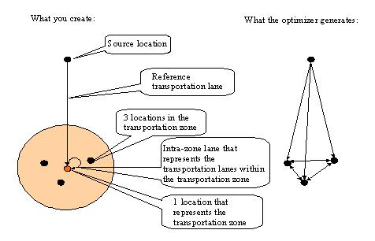

'Transportation Zones'

Maintaining Transportation Zones
A transportation zone hierarchy is needed where several locations are assigned to. For each transportation zone a reference transportation lane is needed between the source and a reference location in the zone, also an intra-zone lane is needed, that is a lane from the reference location to itself. Then for the locations in the transportation zone all transportation lanes are automatically created between all locations as well as to the source location. This is shown in the figure below:

In the Frutado scenario, 20 customers have been assigned to each distribution center. Clustering of the customers could be of relevance in a real world situation if for example the drivers have a special knowledge of specific areas.
Using transportation zones is an alternative method that could be used in the Frutado scenario, instead of creating transportation lanes between all customers and its distribution center. This lesson shows where you maintain the transportation zones and how you create a transportation zone hierarchy which the customers are assigned to.